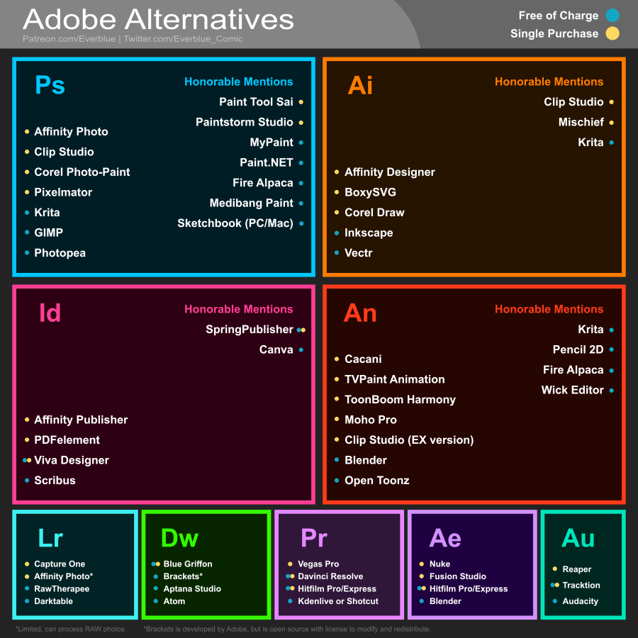

这辈子不可能不用Adobe的软件。开源的又不会用，只有白嫖才能维持得了生活这样子。Creative Cloud 里面的软件个个都是神器，统一又好用，喔唷——超喜欢Adobe！
玩笑归玩笑。虽然Adobe好用，但是店大欺客，对国内的用户也不是很友好。而且最近打击盗版得力度加强了(盗版太多了，人家也烦)
听说思杰马克丁也代理了Adobe的软件了。。。。。。
算了，该用破解还是得用。等哪天有钱了，我就去购买Affinity的产品。不要打我
破解
写这篇文章，Adobe已经出了2021版本，但是破解的程序还没跟上，只能用2020来暂时救火
但是，很尴尬的一个：Adobe已经不提供离线安装包的下载链接了。唯一的安装的方法只有先下载 Creative Cloud App，然后登录Adobe账号，在里面下载PS，AI等软件。
如果非要离线下载，网上看到一个小方法：官网联系Adobe客服，让他们发离线下载链接给你。
但是我试过了，失败了。提到我已经试用过2020的版本了，我需要订阅他们的服务(先给钱)，他才给我下载链接。这个订阅是可以7天内免费取消的。但是，我感觉事情不是那么简单。。。就不理会了，自己去网上找资源。
我其实是有强迫症的，非官网的软件不用。但是现在Adobe封死了这条路，没办法，只能冒险去试试网上的其他资源。如果其他的资源我都看不上，我想我硬盘上面的2019能用到天荒地老了。
软件下载
这个是放在 Google Drive，目前试了PS和AI，还行，扫毒能过去。
Adobe Photoshop 2020 http://bit.ly/OrsZ215fa
Adobe Illustrator 2020: http://bit.ly/2O5LfMz
Adobe InDesign 2020: http://bit.ly/3367WV4
Adobe Premiere Pro 2020: http://bit.ly/2Oafr433g
Adobe After Effect 2020: http://bit.ly/2OsL32Fz
来自Github：https://github.com/Cratobi/adobe2020破解程序
https://www.cybermania.ws/software/adobe-cc-2019-2020-genp-universal-patch-v-2-5/
替代
目前先整理一下可以替代Adobe的软件。但是目前弃用Adobe是不可能，首先学习成本就摆在这里。其次，目前没有哪个厂商，能像Adobe产品线这么广的，Adobe每个产品界面逻辑都很类似，了解一个之后，去上手另一个没多大问题。
注意：下面的替代方案看似很多很美好，但是能不能经得起考验还有待研究。毕竟，平面设计Adobe排第二，这世界上可能没人敢说第一。
这个大佬整理的部分可以替代Adobe的软件：
图里面都是可以替代的软件：
蓝色是免费的
黄色是单次买断的(长期用比Adobe的订阅付费简直不要太良心)

后话
Adobe，我求求你做个人吧